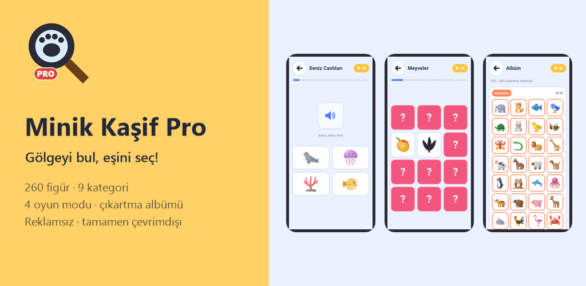
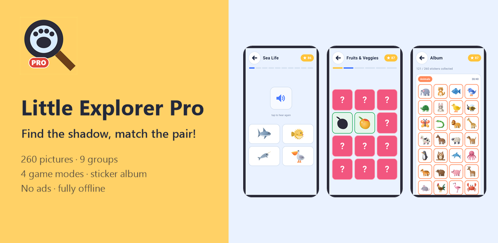
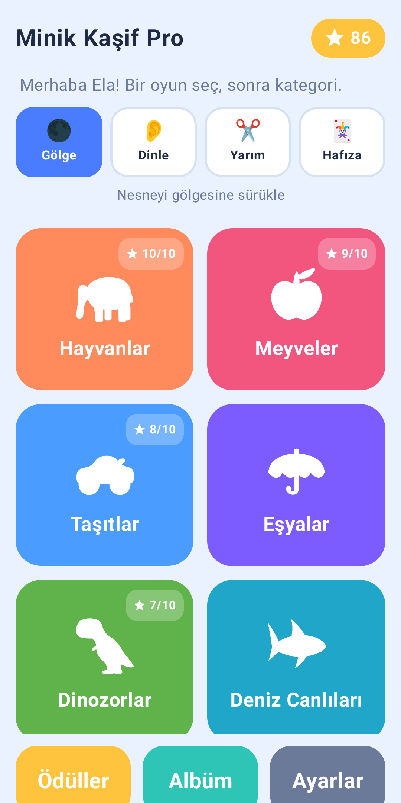
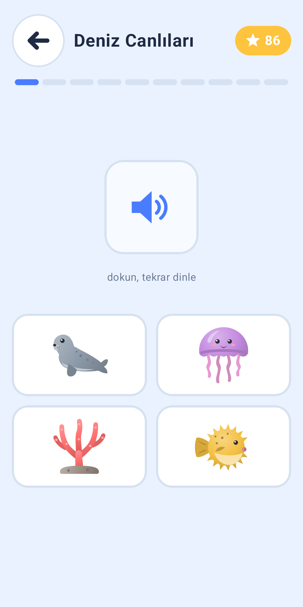
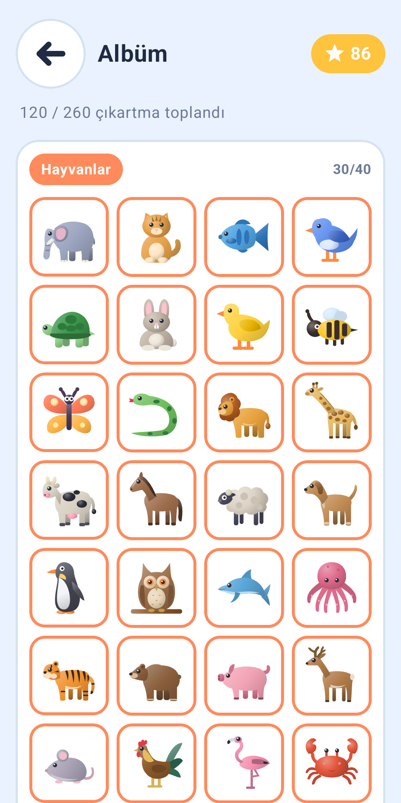
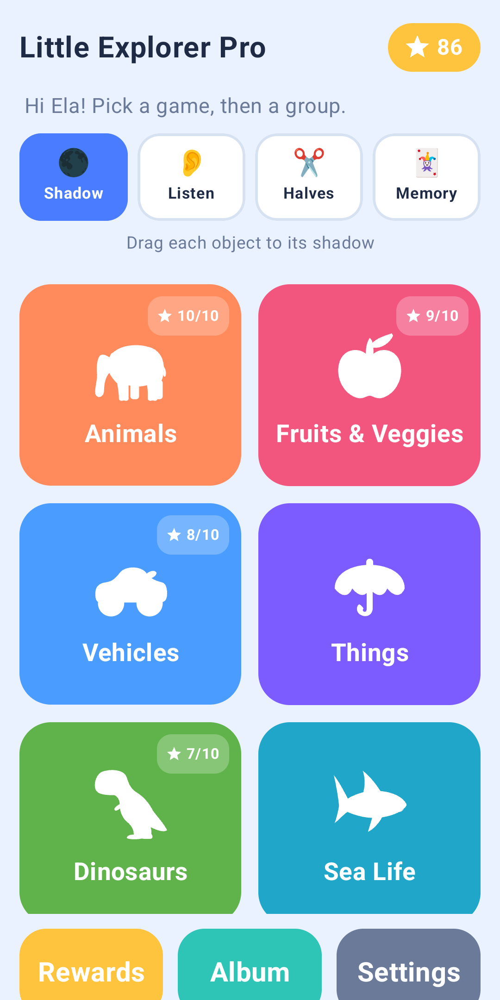
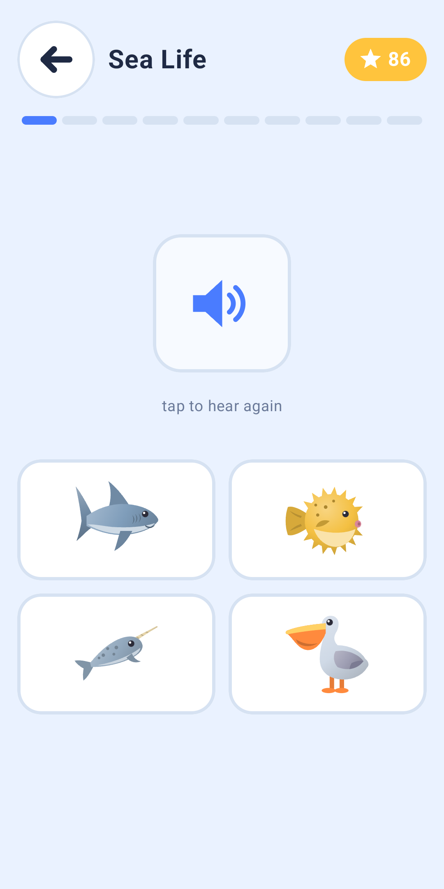
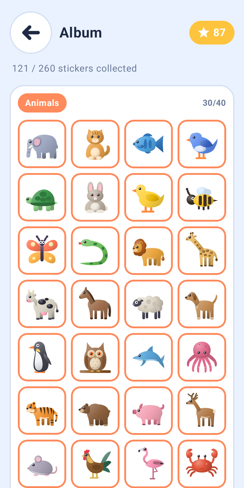
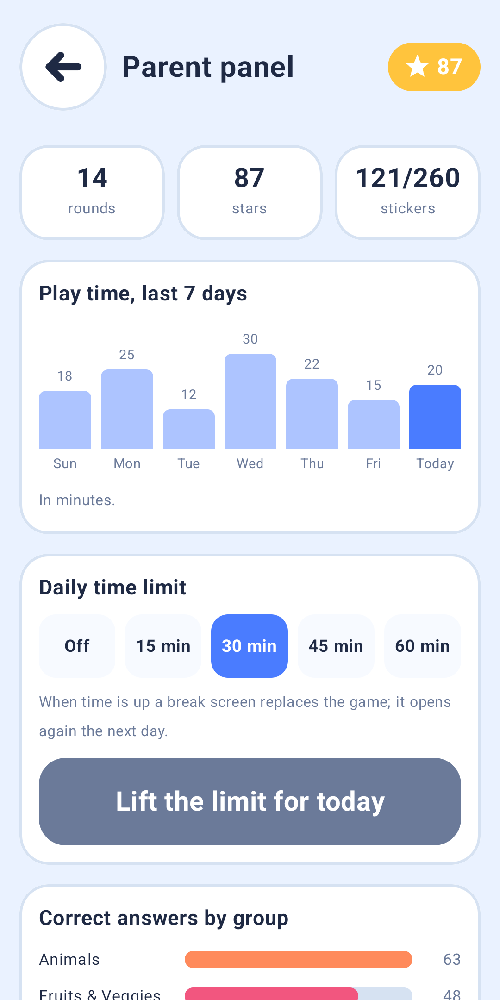

Minik Kaşif ProLittle Explorer Pro
Gölge Oyunu · reklamsız · çevrimdışıShadow game · ad-free · offline


OyunThe game
Minik Kaşif'in reklamsız ücretli sürümü. Bir kez satın alın; reklam yok, internet gerekmez, hesap yok. Ekrandaki gölgeye bak, doğru resmi parmağınla sürükleyip gölgesinin üstüne bırak; doğru eşleşmede adı sesli okunur. Yanlış resim sessizce yerine döner, ceza ya da süre baskısı yok.The ad-free paid edition of Little Explorer. Buy once; no ads, no internet needed, no account. Look at the shadow, drag the right picture onto it and hear its name read aloud. A wrong picture simply slides back; no penalties, no timers.
- Dört oyun modu: Gölge, Dinle (adı duy, resmi bul), Yarım (yarım resmin bütününü bul) ve Hafıza (resmi gölgesiyle eşleştir)Four game modes: Shadow, Listen (hear the name, find the picture), Halves (find the whole of half a picture) and Memory (pair each picture with its shadow)
- 9 kategori, 260 figür: hayvanlar, meyveler ve sebzeler, taşıtlar, eşyalar, dinozorlar, deniz canlıları, meslekler, müzik aletleri ve uzay9 groups, 260 pictures: animals, fruits and vegetables, vehicles, things, dinosaurs, sea life, jobs, instruments and space
- Çıkartma albümü: eşleştirilen her figür albüme renkli çıkartma olarak yapışırSticker album: every matched picture is added as a colourful sticker
- Kolay, Orta ve Zor seviye; yıldızlar, rekorlar ve rozetlerEasy, Medium and Hard; stars, best scores and badges
- Türkçe ve İngilizce: menüler, figür adları ve sesli anlatımEnglish and Turkish: menus, picture names and voice
- Telefon ve tablet için düzenLayouts for phones and tablets
Ekran görüntüleriScreenshots







Ebeveyn paneli ve verilerParent panel and data
- Son yedi günün oyun süresi, günlük süre sınırı (15-60 dakika) ve süre dolunca mola ekranıPlay time for the last seven days, a daily time limit (15-60 minutes) and a break screen when time is up
- Kategorilere göre ilerleme ve en çok karıştırılan figürlerProgress by group and the most mixed-up pictures
- Panel ve sıfırlama bir çarpma sorusuyla korunurThe panel and reset are protected by a multiplication question
- Uygulamanın internet izni yok; hiçbir veri toplanmaz, bütün ilerleme yalnızca cihazda kalırThe app has no internet permission; no data is collected and all progress stays on the device